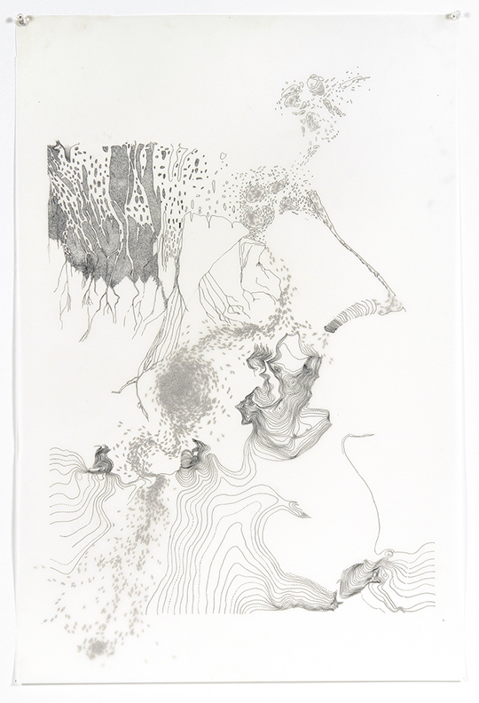

Donnees-a-voir
Artistes / designers
Bureau d’Études
Le duo d’artistes Léonore Bonaccini et Xavier Fourt sous le nom de Bureau d’Études a, depuis plusieurs années, produits des cartographies de systèmes politiques, sociaux et économiques contemporains. Les analyses visuelles du capitalisme transnational est basé sur d’importantes recherches et se présentent généralement sous la forme de large murale. De nombreux travaux sont regroupés dans leur publication « An Atlas of Agendas ». Le site propose de nombreux PDF à télécharger.

Le livre est disponible dans l'espace documentation de l'exposition.
Ashley Hunt - Prison Maps
En plus des travaux présentés dans l'exposition, une documentation en ligne comprend 2 cartes intéractives :
What is the Prison Industrial Complex?
What is the Context for Today’s Prison Industrial Complex?
Source : http://correctionsproject.com/wordpress/portfolio/prison-maps/
Mira Rojanasakul
Mira Rojanasakul a la particularité d’être plasticienne et tout à la fois de travailler au service Data Visualisation de Bloomberg.
Site web personnel ( comme artiste ) :
Son travail pour Bloomberg :
http://www.bloomberg.com/politics/authors/ARmRTw-SmTg/mira-rojanasakul

Rahul Bhargava / MIT
Rahul Bhargava est un chercheur et technicien spécialisé en technologies citoyennes et en alphabétisation aux datas. Il créé des sites Internet pour améliorer l’expérience éducative et des visualisations pour des scénographies de musées. Au Centre des médias citoyens du MIT, il dirige des développements techniques de projets allant d’interfaces pour l’analyse quantitative de news, à des plateformes pour la captation enrichie par les usagers. Son principal intérêt porte sur la manière dont les personnes interagissent avec les nouvelles technologies dans un contexte d’apprentissage.
http://rahul.connectionlab.org
https://datatherapy.org/data-mural-gallery/how-to-make-a-data-mural/